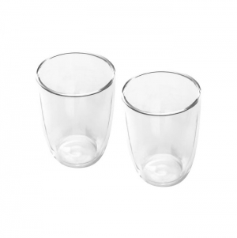
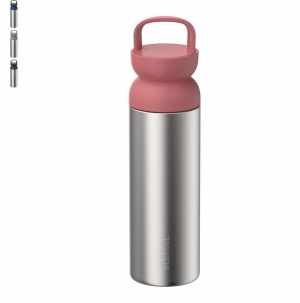

Tipos e variantes
Garrafas
Compare gargalo, abertura, fecho e forma de agarrar; a presença de uma tampa não demonstra estanquidade.
Aspetos que distinguem as opções: Altura, diâmetro, capacidade e acesso para limpeza.
Contexto possível: Deslocações, secretária e transporte de bebida.
Copos com ou sem tampa
Copo aberto, tampa com abertura e fecho para transporte respondem a necessidades diferentes.
Aspetos que distinguem as opções: Bocal, palhinha se existir, base e instruções de transporte.
Contexto possível: Consumo à mesa ou em movimento, conforme o fecho documentado.
Canecas
A pega e o formato de consumo fazem parte da escolha; compare a posição da mensagem com ambas as mãos.
Aspetos que distinguem as opções: Pega, base, peso e acesso ao interior.
Contexto possível: Bebidas à mesa e pausas no trabalho.
Recipientes térmicos e copos de viagem
Distinga o recipiente destinado a beber em movimento do destinado a guardar a bebida até ao serviço. Observe bocal, acionamento da tampa e possibilidade de o transportar fechado; a descrição térmica não indica um número de horas.
Aspetos que distinguem as opções: Acesso ao bocal, desmontagem das juntas e condições documentadas de transporte.
Contexto possível: Percursos diários, pausas e deslocações.
Garrafas para atividade desportiva
Um bocal de acionamento rápido e um gargalo largo oferecem experiências de uso distintas. Teste a pega e a abertura sem deduzir estanquidade pelo aspeto da tampa.
Aspetos que distinguem as opções: Forma de agarrar, bocal, limpeza e encaixe no suporte previsto.
Contexto possível: Atividade física e uso em deslocação.
Lancheiras e caixas de refeição
Uma caixa rígida organiza o alimento; uma bolsa exterior transporta essa caixa. Identifique divisórias, peças removíveis e fechos. Contacto alimentar e modo de aquecimento dependem das instruções do artigo. ↗
Aspetos que distinguem as opções: Dimensões internas, encaixe da refeição, separação de alimentos e acesso para lavar.
Contexto possível: Refeições fora de casa e pausas no trabalho.
Utensílios de cozinha e acessórios de bar
Talheres, espátulas, tábuas, abre-garrafas e saca-rolhas devem ser escolhidos pela tarefa e pela pega. Um conjunto pode reunir peças com materiais e cuidados diferentes.
Aspetos que distinguem as opções: Acesso para limpar, arrumação, bordos e partes que tocam em alimentos.
Contexto possível: Preparação, serviço e utilização à mesa.

Usos e contextos
- Para transporte dentro de um saco, confirme fecho e estanquidade.
- Para consumo à mesa, compare conforto de pega, estabilidade e limpeza.
O que comparar
- Compare capacidade com dimensões e peso; verifique o encaixe no local de uso.
- Peça instruções sobre bebidas quentes, temperatura, fecho e transporte.
- Observe desmontagem e acesso ao bocal, juntas e palhinha.
- Separe contacto alimentar, transporte e aquecimento: a aptidão para um destes usos não demonstra a aptidão para os outros. A referência institucional abrange recipientes e utensílios, sem validar um artigo concreto. ↗
Materiais e componentes
São possibilidades a identificar no artigo escolhido. Confirme a composição de cada parte; os materiais de uma variante não descrevem toda a família.
Tampa, bocal e acessórios
plásticos
Identificar peças desmontáveis e juntas; o corpo não descreve a tampa.
Corpo ou recipiente interior
vidro · cerâmica
Confirmar acabamento e instruções do artigo completo.
Zonas de personalização
- Parede exterior: Medir altura útil, curvatura e mudanças de diâmetro; excluir zonas de contacto com a bebida.
- Pega ou tampa: Avaliar cada componente sem dificultar abertura ou limpeza.

Técnicas e condições
Possibilidades gerais para comparar. A aplicação depende do artigo, da superfície, do desenho e das condições do processo; não está confirmada para um artigo específico.
Gravação a laser
Confirmar material, acabamento, fixação e efeito; aparência metálica não prova compatibilidade.
Serigrafia
Confirmar geometria, área livre, tinta e lavagem prevista.
Sublimação
Exige suporte e revestimento adequados; não se presume que qualquer caneca de cerâmica aceite o processo.
Limitações e cuidados
- “Térmico” não quantifica duração de conservação da temperatura; procure ensaio e condições do artigo.
- Não atribua estanquidade, resistência a quedas ou uso em micro-ondas pelo material.
- A referência de cuidados recomenda consultar as instruções antes de lavar à máquina e separar componentes quando essa lavagem é permitida. Isto não confirma os cuidados de outros artigos. ↗
- Confirme também os cuidados do acabamento personalizado.
Antes de decidir
- Vai ser transportado ou usado à mesa?
- Que bebida e temperatura estão previstas?
- Como se desmonta a tampa?
- Que cuidados exigem corpo e marca?
Perguntas frequentes
Uma tampa torna o copo estanque?
Não. Pode haver abertura para beber; confirme estanquidade e posição permitida no transporte.
Pode ir à máquina de lavar loiça?
Só quando as instruções do artigo e da personalização o permitirem; confirme todas as peças.
Parede dupla garante um resultado térmico específico?
Não atribua horas de conservação sem documentação e condições de ensaio.
Fontes e âmbito
As referências sustentam os factos identificados no texto. Os tipos, contextos e critérios de escolha são orientação editorial; as instruções de um fabricante aplicam-se ao seu próprio âmbito.
-
Cuidados de recipientes de bebida
Documentação técnica de referência · Consulta:Cuidados dos recipientes do fabricante e consulta das instruções antes de lavar à máquina.
-
Materiais em contacto com alimentos
Comissão Europeia · Consulta:Recipientes, utensílios e embalagens destinados a contacto alimentar. Enquadramento geral; não comprova a conformidade de qualquer artigo ilustrado.